The
labyrinth
remembers you. Would you like to continue where you left off?
Yes
No
Close
Journal
Ingress
The Antechamber
Ritual of Runes
The Labyrinth Proper
Chasing Shadow
Mazes & Labyrinths
Mossy Corner
The Wall
Ritual of Lines
Pressing
Growth & Change
The Garden
The Rowan
Ritual of Wands
The Stranger
In Darkness
The Corpses
The Window
The Moth
The Towering Oak
Noises in the Dark
The Crow
Falling
Festivities & Responsibilities
The Pit
Ritual of Lights
Scorn the Light
Travelling Alone
Contaminant
The Cistern
The Cistern
Echoes
Ritual of Blades
Apathy
Cowardice
Doubt
Apathy Sinks
Cowardice Drowns
Doubt Tempts
Drowned
Freedom
Tools & Gifts
Swimming
The Cave
Eyes of the Stranger
The Altar
Egress
Map
Options
Credits

Enter
Continue
Map
Options
Credits
Quit
Continue
Journal
Options
Quit